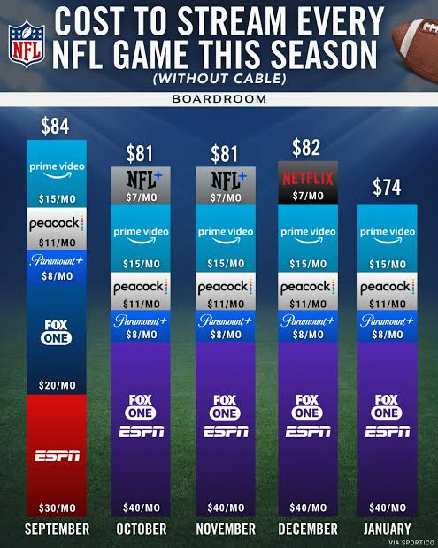

The Problem
Everyday fans are being priced out of their favorite sport. According to Forbes, for the 2026 NFL season, fans can expect to pay close to $1,000 to be able to watch every game across 9 separate platforms. Not only is this costly, but it is also inconvenient. Fans are forced to subscribe to multiple platforms just to watch their favorite team. With media deals seemingly being made as a yearly occurrence and the NFL's clear push towards globablization, fans are being left behind. The NFL is a sport that is meant to be enjoyed by everyone, not just those who can afford it.

About Ball Knower
Ball Knower offers a unique platform where casual and die-hard fans alike can come together to enjoy the sport they love without breaking the bank. Our platform provides a comprehensive schedule of all NFL games, along with trivia and predictions to enhance your viewing experience. We aim to make football accessible to everyone, ensuring that fans can stay connected to their favorite teams and players without the financial burden.